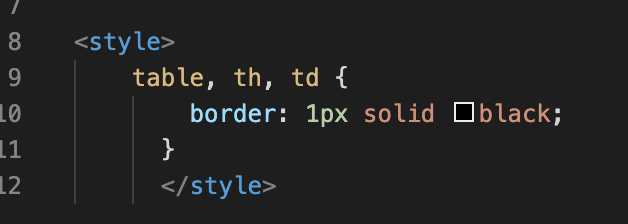

This first week of class we got to learn about
a few different interesting topics. Our readings began
with the history of how the web became to be, and why
different data transfer protocols were developed. As well as why certain
hardware was created in order to make the whole process more
user friendly. For example routers storing IP addresses and
mapping them to domain names.
Besides the history aspect of the web we also got some hands on experience.
We got to practice using HTML to construct basic webpages which I had a lot
of fun with because I felt like our lab activities allowed us to experiment.
While doing this we learned how to create forms, tables, display images and videos,
etc. Below is some sample HTML demonstrating some of the things we learned how
to do this week. In addition to HTML I watched a few videos on YouTube to learn
more about CSS styling.
| Age | Avg Wealth |
|---|---|
| 20 | 16000 |
| 30 | 45000 |
| 40 | 63000 |
| 50 | 117000 |
| 60 | 172000 |

Inserting this in the head will give the table its black border.
Adding images to your page is relatively simply, I could for example just add the image above by adding "img src = brody.jpeg" but that wouldn't make the site accessible to those who navigate the web with disabilities. You have to make sure you include alt tags, and if you plan on your website becoming popular you should be making it as accessible as possible.